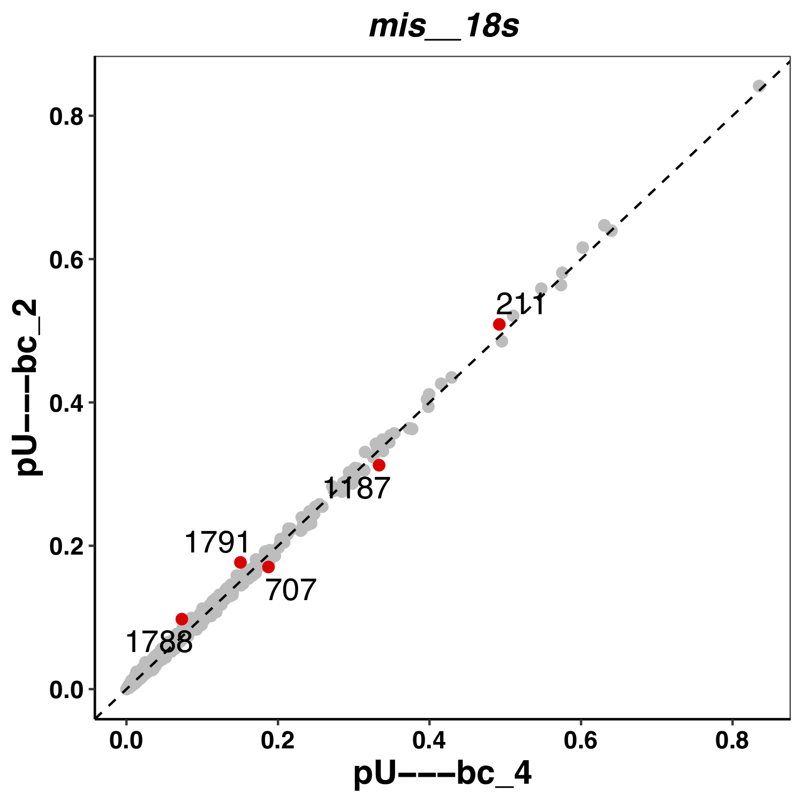

MOP_MOD
This module takes as input the output from MOP_PREPROCESS: basecalled fast5 reads, together with their respective fastq files and unspliced alignments to the transcriptome . It runs four different RNA detection algorithms (Epinano, Nanopolish, Tombo and Nanocompore) and it outputs the predictions generated by each one of them as individual tab-delimited files.
Input Parameters
Parameter name |
Description |
|---|---|
input_path |
Output folder generated by mop_preprocess |
comparison |
TSV file with two fields, each one will indicate the ID of the sample that has to be compared 1 vs 1 |
reference |
reference sequences |
output |
Output folder |
pars_tools |
TSV file with optional extra command line parameters for the tool indicated in the first field. |
epinano |
It (in)activate the corresponding flow. It can be YES or NO |
nanocompore |
It (in)activate the corresponding flow. It can be YES or NO |
tombo_lsc |
It (in)activate the corresponding flow. It can be YES or NO |
tombo_msc |
It (in)activate the corresponding flow. It can be YES or NO |
epinano_plots |
If YES will produce a plot for each sample for each transcript. |
Email for pipeline reporting. |
How to run the pipeline
Before launching the pipeline,user should:
Decide which containers to use - either docker or singularity [-with-docker / -with-singularity].
Fill in both params.config and tools_opt.tsv files.
Fill in comparison.tsv file - please see example below:
wt_1 ko_1
wt_2 ko_2
To launch the pipeline, please use the following command:
nextflow run mop_mod.nf -with-singularity > log.txt
You can run the pipeline in the background adding the nextflow parameter -bg:
nextflow run mop_mod.nf -with-singularity -bg > log.txt
You can change the parameters either by changing params.config file or by feeding the parameters via command line:
nextflow run mop_mod.nf -with-singularity -bg --output test2 > log.txt
You can specify a different working directory with temporary files:
nextflow run mop_mod.nf -with-singularity -bg -w /path/working_directory > log.txt
Note
In case of errors you can troubleshoot seeing the log file (log.txt) for more details. Furthermore, if more information is needed, you can also find the working directory of the process in the file. Then, access that directory indicated by the error output and check both the .command.log and .command.err files.
Tip
Once the error has been solved or if you change a specific parameter, you can resume the execution with the Netxtlow parameter - resume (only one dash!). If there was an error, the pipeline will resume from the process that had the error and proceed with the rest. If a parameter was changed, only processes affected by this parameter will be re-run.
nextflow run mop_mod.nf -with-singularity -bg -resume > log_resumed.txt
To check whether the pipeline has been resumed properly, please check the log file. If previous correctly executed process are found as Cached, resume worked!
Results
Several folders are created by the pipeline within the output directory specified by the output parameter:
Epinano results are stored in epinano_flow directory. It contains two files per sample: one containing data at position level and the other, at 5-mer level. Different features frequencies as well as quality data are included in the results. See example below:
#Ref,pos,base,cov,q_mean,q_median,q_std,mis,ins,del
gene_A,2515,C,45497.0,5.36995,4.00000,3.97797,0.0822032221904741,0.18715519704595907,0.2058377475437941
gene_A,2516,A,45504.0,5.38207,4.00000,4.71619,0.17128164556962025,0.20497099156118143,0.07733386075949367
gene_A,2517,C,45529.0,6.92130,5.00000,5.04250,0.06165301236574491,0.1505633771881658,0.13540820136616222
gene_A,2518,A,45545.0,6.49821,5.00000,5.47485,0.10802503018992206,0.10855198155670216,0.2082775277198375
gene_A,2519,T,45557.0,6.51247,5.00000,4.81853,0.09386043857145993,0.14792457800118533,0.2033057488421099
Here an example of a plot from Epinano:
{kind=link}
Tombo results are stored in tombo_flow directory. It contains one file per comparison. It reports the p-value per position, the sum of p-values per 5-mer and coverage in both WT and KO. See example below:
"Ref_Position" "Chr" "Position" "Tombo_SiteScore" "Coverage_Sample" "Coverage_IVT" "Tombo_KmerScore"
"gene_A_3" "gene_A" "3" "0.0000" "92" "87" NA
"gene_A_4" "gene_A" "4" "0.0000" "92" "87" NA
"gene_A_5" "gene_A" "5" "0.0000" "92" "87" 0
"gene_A_6" "gene_A" "6" "0.0000" "93" "88" 0.0014
"gene_A_7" "gene_A" "7" "0.0000" "95" "89" 0.0027
"gene_A_8" "gene_A" "8" "0.0014" "95" "89" 0.004
Nanopolish results are stored in nanopolish-compore_flow directory. It contains two files per sample: raw eventalign output (gzipped) and another with the median raw current per position and transcript (sample_processed_perpos_median.tsv.gz). See example below:
contig position reference_kmer read_name median coverage
gene_A 0 AAATT 1 113.35 433
gene_A 1 AATTG 1 97.24 506
gene_A 2 ATTGA 1 70.35 2034
gene_A 3 TTGAA 1 102.03 416
gene_A 4 TGAAG 1 115.315 422
gene_A 5 GAAGA 1 104.25 471
Nanocompore results are stored in nanopolish-compore_flow directory. It contains one file per comparison (wt_1_vs_ko_1_nanocompore_results.tsv). Default output from Nanocompore (see Nanocompore’s repository for a more detailed explanation).